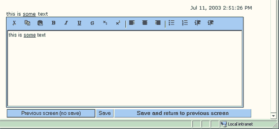

Mini Word Editor on the Web (dhtml)
After rolling out a web application my customers asked for a fancy MS word editor instead of those raw-textareas. I said it wasn’t possible and proposed to use the usenet kind of markup to get *bold*, _underline_ and /italics/. But that was never implemented in the end. Just before rolling out version 2 we found a neat WYSIWYG editor using DHTML. Althoug it only worked on IE5.5 or higher we still decided to implement it. After some time I got the complaint from my customer that the DEL key didn’t work and also some other shortcut keys. Luckily I can say from today: “I know why”.
It costed me quite sometime to find out the reason but in the end it seemed that the problem was: frames. As soom as the editor was placed in a frame a number of key-shortcuts were gone like del, Ctrl-V/Ctrl-C, Ctrl-B etc… So at the moment we’re proposing to use a popup and probably wait for a fix.
Below you see the example if the editor:

XHTML, CSS, RSS feeds. Powered by Movable Type. Hosted @Home with a domain by hostway.
Comments
Hi!, I would like to obtain this mini word editor, I apreciate If you could tell me how can I get this mini word editor
I'm just browsing around your site for the first time, interesting read
Interesting